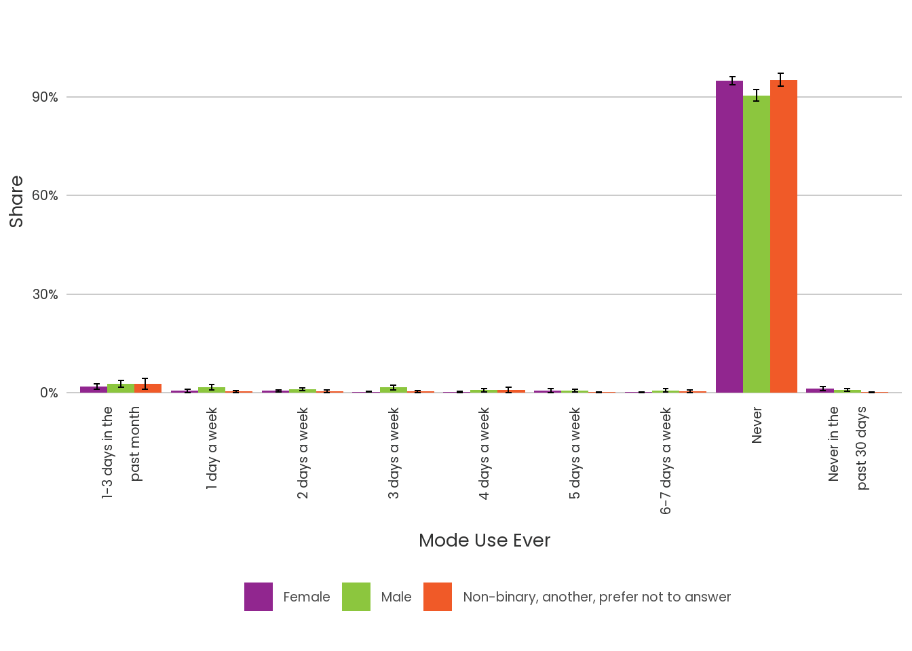
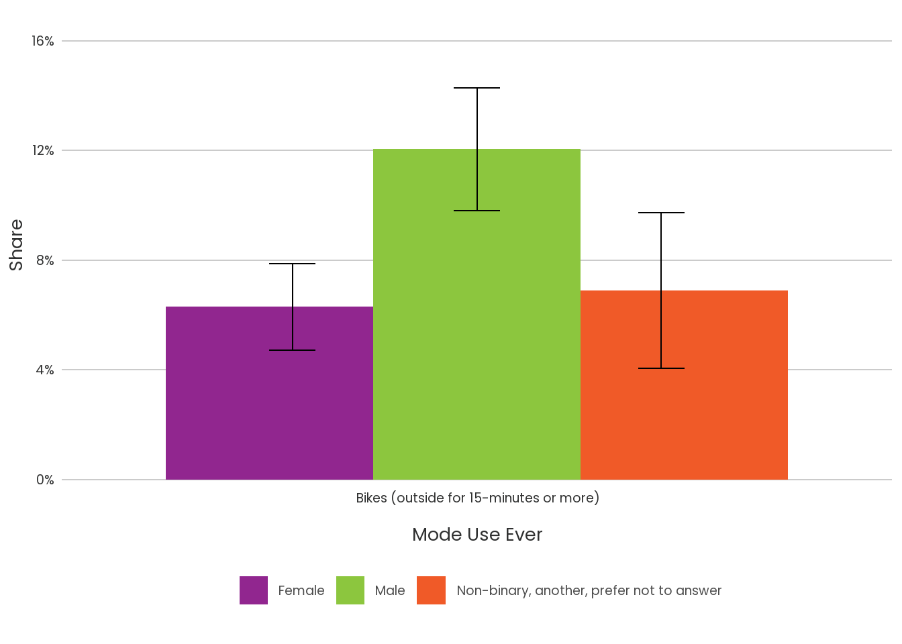
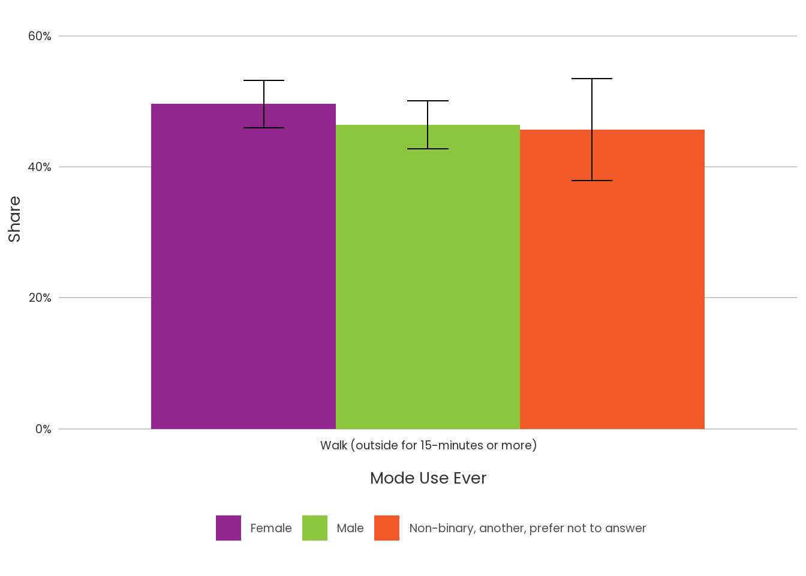
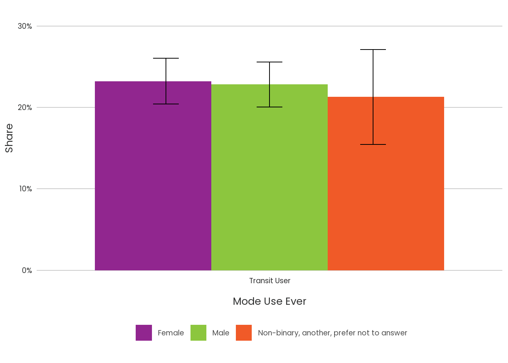
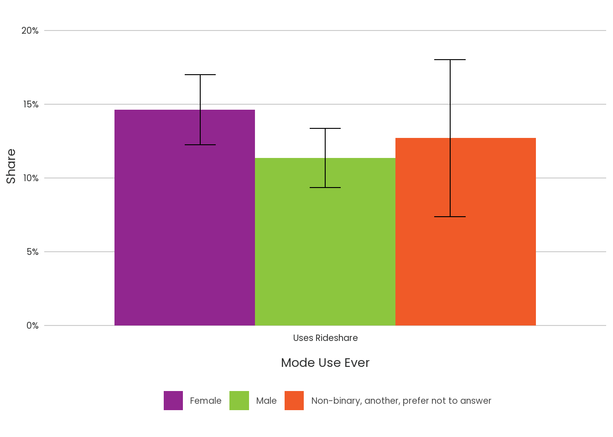
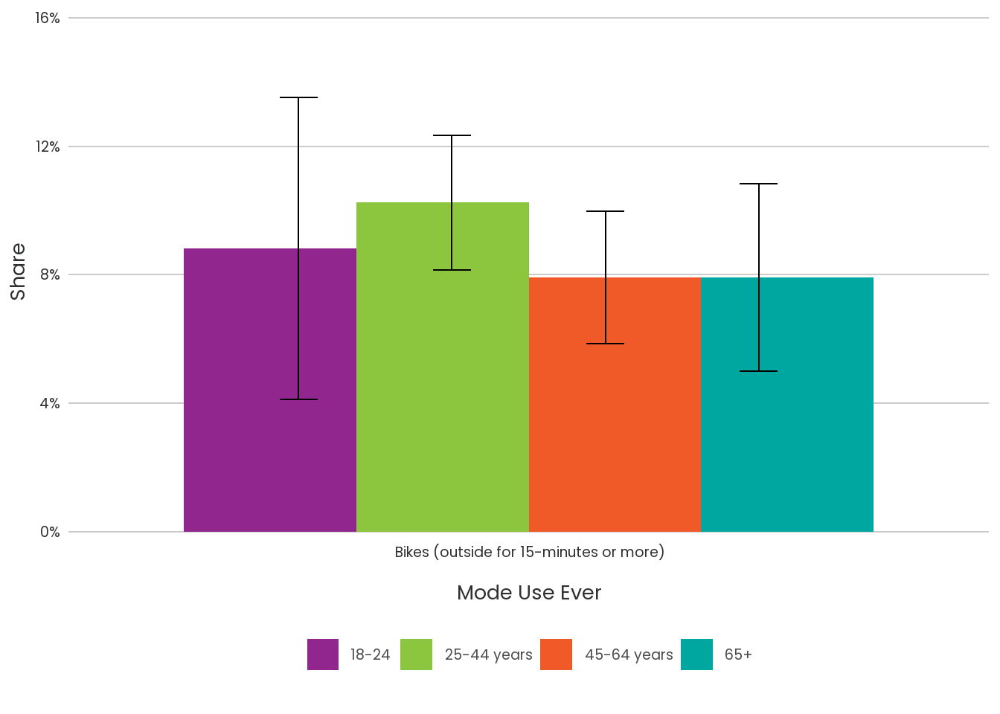
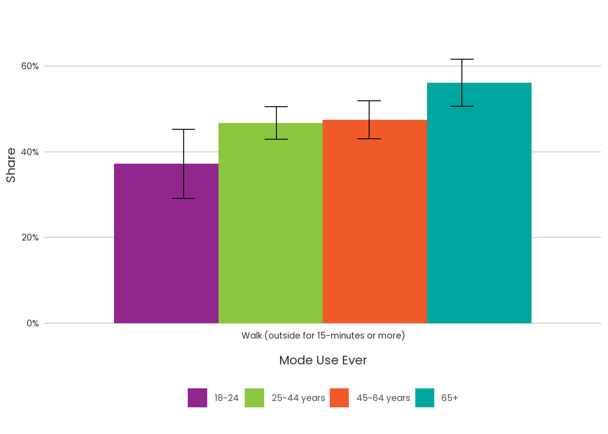
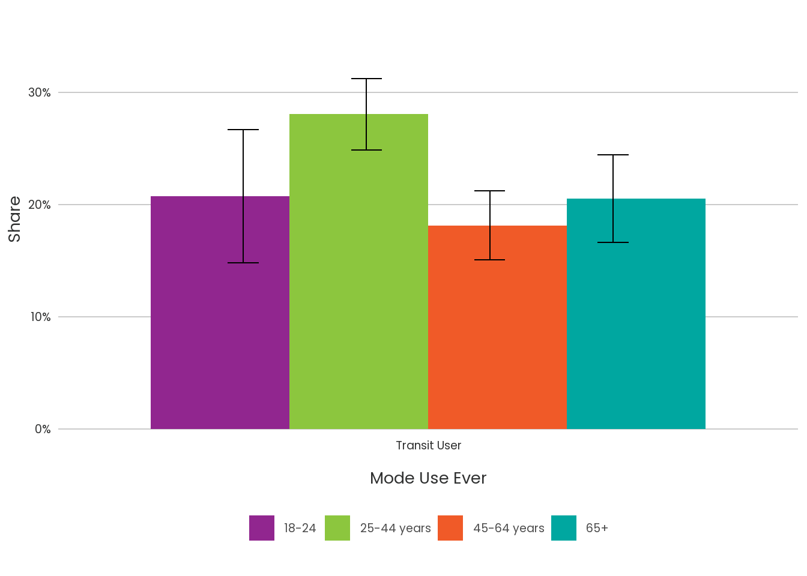
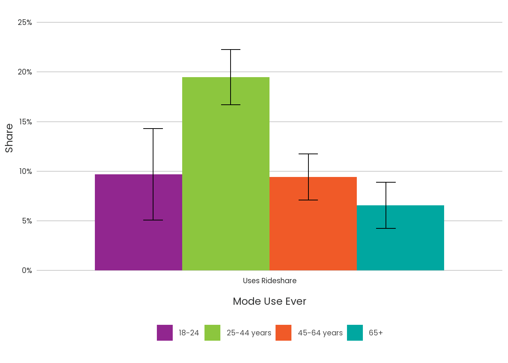

hh<- get_query(sql= "select household_id as hh_id, hhincome_broad,home_jurisdiction, home_county, hh_weight,vehicle_count, home_rgcname, home_lat, home_lng, survey_year, hh_race_category
from HHSurvey.v_households_labels")
person<- get_query(sql= "select household_id as hh_id,race_category, walk_freq, bike_freq, transit_freq,
person_id, workplace, telecommute_freq, survey_year, person_weight, gender, age, sexuality, industry,office_available, commute_freq, education, work_lat, work_lng , work_rgcname, work_jurisdiction, work_county, share_1, share_2, share_3, share_4, share_5
from HHSurvey.v_persons_labels")
day<- get_query(sql= "select person_id, day_id, household_id as hh_id, telework_time, day_weight , survey_year from HHSurvey.v_days_labels")
trip<- get_query(sql= "select trip_id, household_id as hh_id, day_id,
person_id, mode_1, dest_purpose, survey_year, trip_weight, distance_miles, mode_characterization, travelers_total
from HHSurvey.v_trips_labels")
setDT(hh)
setDT(person)
setDT(day)
setDT(trip)Travel Survey Summarization
New Package travelSurveyTools
PSRC and RSG have built a new package called travelSurveyTools to work with travel survey data. It is recommended to read through this documentation before you start using the package. https://rsginc.github.io/travelSurveyTools/
Read in Libraries
YOU MIGHT need to download some special packages on github: travelSurveyTools, psrcelmer, and psrcplot. IF you need to download them, here’s how:
library(devtools)
devtools::install_github(‘rsgInc/travelSurveyTools’) devtools::install_github(‘psrc/psrcelmer’)
devtools::install_github(‘psrc/psrcplot’)
Read in Codebook
variable_list and value_labels will be used by the travelSurveyTools package whenever you summarize.
Read in Data from Elmer
The 2017, 2019, 2021, and 2023 travel survey data is in Elmer. You will need to select exactly which columns you want to summarize. Note that the variables and values you pull in must match the codebook. (if for some reason in error, there is inconsistency we have to fix it).
The package uses DT and data.table for most operation, so you will usually want inputs to be in data.table format.
Set IDs as characters
We should fix this by writing a function. But for now set all ids to characters for easy joining.
hh[, hh_id:=as.character(hh_id)]
person[, hh_id:=as.character(hh_id)]
day[, hh_id:=as.character(hh_id)]
trip[, hh_id := as.character(hh_id)]
person[, person_id := as.character(person_id)]
day[, person_id := as.character(person_id)]
trip[, person_id := as.character(person_id)]
day[, day_id := as.character(day_id)]
trip[, day_id := as.character(day_id)]
trip[, trip_id := as.character(trip_id)]
hh <- hh%>%mutate(survey_year=as.character(survey_year))
person <- person%>%mutate(survey_year=as.character(survey_year))
day <- day%>%mutate(survey_year=as.character(survey_year))
trip <- trip%>%mutate(survey_year=as.character(survey_year))Before you get started on any summary, please review the survey instrument for the question wording and options.
Carefully pay attention to which survey participants were asked which question. Often only a subset of the participants answered a question.
Furthermore, if you are going to summarize any data across time, you will need to RECONCILE any changes.
The survey instrument is here: J:/Projects/Surveys/HHTravel/Survey2023/Documents/Survey_Instrument/Puget_Sound_HTS_Questionnaire_2023_Final.docx
Open the codebook and review the variable and it’s values. J:/Projects/Surveys/HHTravel/Survey2023/Data/data_published/PSRC_Codebook_2023_v1.xlsx
Careful with multi-year summaries.
If you are doing a multi year summary, carefully look back at the questionnaire to note question changes. Here are the questionnaires for 2019:file:///J:/Projects/Surveys/HHTravel/Survey2019/Planning/Survey%20Materials/PSRC_2019_Online_Questionnaire.html#employment_and_commute_questions and 2021:J:/Projects/Surveys/HHTravel/Survey2021/Questionnaire/PSRC_2021_Questionnaire_032521.docx
Note that in the values table, we have groupings. These groupings can help you handle inconsistencies in the questions over time.
Also we generally have way too much detail in the responses to have statistically significant results, so most of the time you want to summarize grouped data. You can add the groupings to the variables table by using the function get_grouped_labels
variable_list<-add_variable(variable_list, 'age_grp_2','person') variable is_checkbox hh person day trip vehicle location description
<char> <num> <num> <num> <num> <num> <num> <num> <char>
1: age_grp_2 0 0 1 0 0 0 0 age_grp_2
logic data_type shared_name
<char> <char> <char>
1: age_grp_2 integer/categorical age_grp_2group_labels<-get_grouped_labels(group_id='group_3', group_name='age_grp_2')
value_labels<-add_values_code(group_name='age_grp_2')
person<-grp_to_tbl(tbl=person, ungrouped_name='age', grouped_name='age_grp_2')variable_list<-add_variable(variable_list, 'gender_grp','person') variable is_checkbox hh person day trip vehicle location description
<char> <num> <num> <num> <num> <num> <num> <num> <char>
1: gender_grp 0 0 1 0 0 0 0 gender_grp
logic data_type shared_name
<char> <char> <char>
1: gender_grp integer/categorical gender_grpgroup_labels<-get_grouped_labels(group_id='group_1', group_name='gender_grp')
value_labels<-add_values_code(group_name='gender_grp')
person<-grp_to_tbl(tbl=person, ungrouped_name='gender', grouped_name='gender_grp')variable_list<-add_variable(variable_list, 'bike_freq_grp','person') variable is_checkbox hh person day trip vehicle location
<char> <num> <num> <num> <num> <num> <num> <num>
1: bike_freq_grp 0 0 1 0 0 0 0
description logic data_type shared_name
<char> <char> <char> <char>
1: bike_freq_grp bike_freq_grp integer/categorical bike_freq_grpgroup_labels<-get_grouped_labels(group_id='group_1', group_name='bike_freq_grp')
value_labels<-add_values_code(group_name='bike_freq_grp')
person<-grp_to_tbl(tbl=person, ungrouped_name='bike_freq', grouped_name='bike_freq_grp')person<-person%>%mutate(bike_freq=if_else(bike_freq=='Missing Response', 'Never', bike_freq))#some how a duplicate snuck into the variable list not sure how
variable_list<-variable_list%>%distinct(variable, .keep_all=TRUE)travelSurveyTools expects the data to be in a list of data.tables. You must also specify the names of the ids on each table, and the names of the weights.
hh_2023<-hh%>%filter(survey_year=='2023')
person_2023=person%>%filter(survey_year=='2023')
day_2023=day%>%filter(survey_year=='2023')
trip_2023<-trip%>%filter(survey_year=='2023')
hts_data = list(hh=hh_2023,
person=person_2023,
day=day_2023,
trip = trip_2023)
ids = c('hh_id', 'person_id','day_id', 'trip_id')
wts = c('hh_weight', 'person_weight', 'day_weight', 'trip_weight')Now mode_simple is on the variables table, the values table, and the trip table. And we can run a summary.
mode_summary = summarize_weighted(hts_data= hts_data,
summarize_var = 'bike_freq',
summarize_by = c( 'gender_grp'),
id_cols= ids,
wt_cols=wts,
wtname='person_weight'
)Warning in hts_validate_variable_list(variables_dt, data): Variable(s) do not
have a location specified: fuel, make, model, model_other, toll_transponder,
vehicle_id, vehnum, yearcommon_modes<-mode_summary$summary$wtd%>%
mutate(moe=prop_se*1.645)
static_column_chart(common_modes, x='bike_freq', y='prop', fill='gender_grp',ylabel= 'Share', xlabel='Mode Use Ever', moe='moe')+ theme(axis.text.x=element_text(size=14), axis.text.y=element_text(size=14),legend.text = element_text(size=14), axis.title.y=element_text(size=20), axis.title.x=element_text(size=20))
write.csv(common_modes, 'bike.csv')mode_summary = summarize_weighted(hts_data= hts_data,
summarize_var = 'share_2',
summarize_by = c( 'gender_grp'),
id_cols= ids,
wt_cols=wts,
wtname='person_weight'
)Warning in hts_validate_variable_list(variables_dt, data): Variable(s) do not
have a location specified: fuel, make, model, model_other, toll_transponder,
vehicle_id, vehnum, yearcommon_modes<-mode_summary$summary$wtd%>%mutate(share_2=if_else(is.na(share_2), 'Not Selected', share_2))%>%
mutate(Bikes=if_else(share_2=='Selected', 'Bikes (outside for 15-minutes or more)', 'Does not Bike'))%>%
mutate(moe=prop_se*1.645)%>%filter(Bikes=='Bikes (outside for 15-minutes or more)')
static_column_chart(common_modes, x='Bikes', y='prop', fill='gender_grp',ylabel= 'Share', xlabel='Mode Use Ever', moe='moe')+ theme(axis.text.x=element_text(size=14), axis.text.y=element_text(size=14),legend.text = element_text(size=14), axis.title.y=element_text(size=20), axis.title.x=element_text(size=20), color='pognbgy_10')Warning in plot_theme(plot): The `color` theme element is not defined in the
element hierarchy.
write.csv(common_modes, 'bike.csv')mode_summary = summarize_weighted(hts_data= hts_data,
summarize_var = 'share_1',
summarize_by = c( 'gender_grp'),
id_cols= ids,
wt_cols=wts,
wtname='person_weight'
)Warning in hts_validate_variable_list(variables_dt, data): Variable(s) do not
have a location specified: fuel, make, model, model_other, toll_transponder,
vehicle_id, vehnum, yearcommon_modes<-mode_summary$summary$wtd%>%mutate(share_1=if_else(is.na(share_1), 'Not Selected', share_1))%>%
mutate(Walks=if_else(share_1=='Selected', 'Walk (outside for 15-minutes or more)', 'Does not Walk'))%>%
mutate(moe=prop_se*1.645)%>%filter(Walks=='Walk (outside for 15-minutes or more)')
static_column_chart(common_modes, x='Walks', y='prop', fill='gender_grp',ylabel= 'Share', xlabel='Mode Use Ever', moe='moe')+ theme(axis.text.x=element_text(size=14), axis.text.y=element_text(size=14),legend.text = element_text(size=14), axis.title.y=element_text(size=20), axis.title.x=element_text(size=20), color='pognbgy_10')Warning in plot_theme(plot): The `color` theme element is not defined in the
element hierarchy.
write.csv(common_modes, 'walk.csv')mode_summary = summarize_weighted(hts_data= hts_data,
summarize_var = 'share_3',
summarize_by = c( 'gender_grp'),
id_cols= ids,
wt_cols=wts,
wtname='person_weight'
)Warning in hts_validate_variable_list(variables_dt, data): Variable(s) do not
have a location specified: fuel, make, model, model_other, toll_transponder,
vehicle_id, vehnum, yearcommon_modes<-mode_summary$summary$wtd%>%mutate(share_3=if_else(is.na(share_3), 'Not Selected', share_3))%>%
mutate(Transit=if_else(share_3=='Selected', 'Transit User', 'Does not use Transit'))%>%
mutate(moe=prop_se*1.645)%>%filter(Transit=='Transit User')
static_column_chart(common_modes, x='Transit', y='prop', fill='gender_grp',ylabel= 'Share', xlabel='Mode Use Ever', moe='moe')+ theme(axis.text.x=element_text(size=14), axis.text.y=element_text(size=14),legend.text = element_text(size=14), axis.title.y=element_text(size=20), axis.title.x=element_text(size=20), color='pognbgy_10')Warning in plot_theme(plot): The `color` theme element is not defined in the
element hierarchy.
write.csv(common_modes, 'transit_use.csv')mode_summary = summarize_weighted(hts_data= hts_data,
summarize_var = 'share_4',
summarize_by = c( 'gender_grp'),
id_cols= ids,
wt_cols=wts,
wtname='person_weight'
)Warning in hts_validate_variable_list(variables_dt, data): Variable(s) do not
have a location specified: fuel, make, model, model_other, toll_transponder,
vehicle_id, vehnum, yearcommon_modes<-mode_summary$summary$wtd%>%mutate(share_4=if_else(is.na(share_4), 'Not Selected', share_4))%>%
mutate(rideshares=if_else(share_4=='Selected', 'Uses Rideshare', 'Does not Rideshare'))%>%
mutate(moe=prop_se*1.645)%>%filter(rideshares=='Uses Rideshare')
static_column_chart(common_modes, x='rideshares', y='prop', fill='gender_grp',ylabel= 'Share', xlabel='Mode Use Ever', moe='moe')+ theme(axis.text.x=element_text(size=14), axis.text.y=element_text(size=14),legend.text = element_text(size=14), axis.title.y=element_text(size=20), axis.title.x=element_text(size=20), color='pognbgy_10')Warning in plot_theme(plot): The `color` theme element is not defined in the
element hierarchy.
write.csv(common_modes, 'rideshare.csv')Age
mode_summary = summarize_weighted(hts_data= hts_data,
summarize_var = 'share_2',
summarize_by = c( 'age_grp_2'),
id_cols= ids,
wt_cols=wts,
wtname='person_weight'
)Warning in hts_validate_variable_list(variables_dt, data): Variable(s) do not
have a location specified: fuel, make, model, model_other, toll_transponder,
vehicle_id, vehnum, yearcommon_modes<-mode_summary$summary$wtd%>%mutate(share_2=if_else(is.na(share_2), 'Not Selected', share_2))%>%
mutate(Bikes=if_else(share_2=='Selected', 'Bikes (outside for 15-minutes or more)', 'Does not Bike'))%>%
mutate(moe=prop_se*1.645)%>%filter(Bikes=='Bikes (outside for 15-minutes or more)')
static_column_chart(common_modes, x='Bikes', y='prop', fill='age_grp_2',ylabel= 'Share', xlabel='Mode Use Ever', moe='moe')+ theme(axis.text.x=element_text(size=14), axis.text.y=element_text(size=14),legend.text = element_text(size=14), axis.title.y=element_text(size=20), axis.title.x=element_text(size=20), color='pognbgy_10')Warning in plot_theme(plot): The `color` theme element is not defined in the
element hierarchy.
write.csv(common_modes, 'bike.csv')mode_summary = summarize_weighted(hts_data= hts_data,
summarize_var = 'share_1',
summarize_by = c( 'age_grp_2'),
id_cols= ids,
wt_cols=wts,
wtname='person_weight'
)Warning in hts_validate_variable_list(variables_dt, data): Variable(s) do not
have a location specified: fuel, make, model, model_other, toll_transponder,
vehicle_id, vehnum, yearcommon_modes<-mode_summary$summary$wtd%>%mutate(share_1=if_else(is.na(share_1), 'Not Selected', share_1))%>%
mutate(Walks=if_else(share_1=='Selected', 'Walk (outside for 15-minutes or more)', 'Does not Walk'))%>%
mutate(moe=prop_se*1.645)%>%filter(Walks=='Walk (outside for 15-minutes or more)')
static_column_chart(common_modes, x='Walks', y='prop', fill='age_grp_2',ylabel= 'Share', xlabel='Mode Use Ever', moe='moe')+ theme(axis.text.x=element_text(size=14), axis.text.y=element_text(size=14),legend.text = element_text(size=14), axis.title.y=element_text(size=20), axis.title.x=element_text(size=20), color='pognbgy_10')Warning in plot_theme(plot): The `color` theme element is not defined in the
element hierarchy.
write.csv(common_modes, 'walk.csv')mode_summary = summarize_weighted(hts_data= hts_data,
summarize_var = 'share_3',
summarize_by = c( 'age_grp_2'),
id_cols= ids,
wt_cols=wts,
wtname='person_weight'
)Warning in hts_validate_variable_list(variables_dt, data): Variable(s) do not
have a location specified: fuel, make, model, model_other, toll_transponder,
vehicle_id, vehnum, yearcommon_modes<-mode_summary$summary$wtd%>%mutate(share_3=if_else(is.na(share_3), 'Not Selected', share_3))%>%
mutate(Transit=if_else(share_3=='Selected', 'Transit User', 'Does not use Transit'))%>%
mutate(moe=prop_se*1.645)%>%filter(Transit=='Transit User')
static_column_chart(common_modes, x='Transit', y='prop', fill='age_grp_2',ylabel= 'Share', xlabel='Mode Use Ever', moe='moe')+ theme(axis.text.x=element_text(size=14), axis.text.y=element_text(size=14),legend.text = element_text(size=14), axis.title.y=element_text(size=20), axis.title.x=element_text(size=20), color='pognbgy_10')Warning in plot_theme(plot): The `color` theme element is not defined in the
element hierarchy.
write.csv(common_modes, 'transit_use.csv')mode_summary = summarize_weighted(hts_data= hts_data,
summarize_var = 'share_4',
summarize_by = c( 'age_grp_2'),
id_cols= ids,
wt_cols=wts,
wtname='person_weight'
)Warning in hts_validate_variable_list(variables_dt, data): Variable(s) do not
have a location specified: fuel, make, model, model_other, toll_transponder,
vehicle_id, vehnum, yearcommon_modes<-mode_summary$summary$wtd%>%mutate(share_4=if_else(is.na(share_4), 'Not Selected', share_4))%>%
mutate(rideshares=if_else(share_4=='Selected', 'Uses Rideshare', 'Does not Rideshare'))%>%
mutate(moe=prop_se*1.645)%>%filter(rideshares=='Uses Rideshare')
static_column_chart(common_modes, x='rideshares', y='prop', fill='age_grp_2',ylabel= 'Share', xlabel='Mode Use Ever', moe='moe')+ theme(axis.text.x=element_text(size=14), axis.text.y=element_text(size=14),legend.text = element_text(size=14), axis.title.y=element_text(size=20), axis.title.x=element_text(size=20), color='pognbgy_10')Warning in plot_theme(plot): The `color` theme element is not defined in the
element hierarchy.
write.csv(common_modes, 'rideshare.csv')